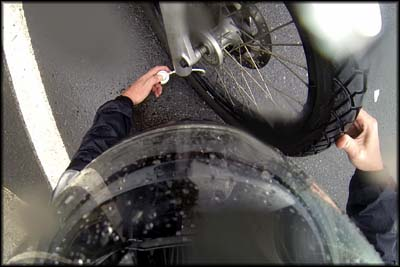
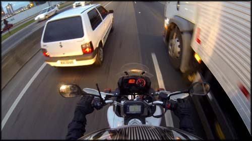
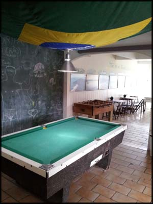

Acordei no hotel em Curitiba, e desci para o café da manhã, muito bem servido por sinal, com boa variedade. Pena que nunca tenho muito apetite pela manhã, então comi pouquinho, voltei ao quarto, arrumei as bagagens, fechei a conta e fui embora.
Eu vinha estranhando a moto, achava que ela não estava desenvolvendo bem como antes, um pouco sem força. Sim, é uma 250 e eu não espero que ela seja mais do que isso, mas eu já fiz viagens de 400km com ela e sabia que algo não estava normal. Procurei então em Curitiba mesmo uma concessionária da Yamaha (Motomania). Chegando lá, fui bem atendido, me encaminharam para o mecânico, e expliquei que tinha feito a revisão de 10.000km no Rio na semana anterior, mas achava que não tinham trocado a vela, a qual deveria ter sido trocada segundo o manual. Já tinha percebido que as revisões na Yamaha, pelo ao menos nas lojas que fui no Rio, são muita enrolação, não fazem 10% do que está previsto.
O mecânico retirou a vela, e estava um pouco suja, bem pouco é verdade, mas deveria ter sido trocada na revisão. Mandei colocar uma nova, regulou corrente, acertou outras coisas... e pude seguir viagem mais tranquilo. Dali pra frente decidi que não iria mais fazer a revisão da Yamaha, apesar de ainda ter mais de 6 meses de garantia na moto, era dinheiro e tempo jogado fora.
Abasteci ainda em Curitiba (969 Km rodados) e segui em direção à Rodovia Prestes Maia (um trecho incorporado da BR-101). Quando descia na parte de serra com curvas mais fechadas, começou a chover. Parei em um canto, coloquei a roupa de chuva, e segui. A pista tem um asfalto bem liso e conservado, e com a chuva que caía estava deveras escorregadio. Passei por uns cinco acidentes com caminhões tombados, os caras não aprendem. Cheguei na altura de Guaruva/SC, e passei por 3 pedágios de R$ 0,85. Um saco parar na praça de pedágio, tirar as luvas, procurar a carteira no bolso da calça por baixo da capa de chuva, catar o dinheiro, guardar tudo, recolocar as luvas... muita ganância cobrar pedágio de moto, um transtorno danado.
No terceiro pedágio que parei, já ranzinza com a chuva e o para-paga-para-paga, percebi que o pneu da frente estava vazio. Putz! No meio do nada! Paguei o maldito pedágio, e encostei a moto em frente à saída da cabine, sobre a faixa de proteção.
Usando o reparador de furos em pneus da Brandy, funcionou e me salvou!
Que saco. Peguei um tubo de reparador de pneu com ar comprimido que eu levava. Se o furo for pequeno, ele faz o serviço, enche o pneu e veda o vazamento. Apliquei o produto, mas vi que continuava a vazar ar pelos raios da moto. Fiquei preocupado, subi logo na moto e comecei a rodar bem devagar, esperando que o produto vedasse o suficiente pra encontrar um borracheiro.
Deu certo, rodei uns 10Km tranquilo até que vi um borracheiro na estrada. Parei, não tinha ninguém, e fiquei lá esperando um pouco, até que veio um cara sujo e barrigudo, a quem perguntei se trabalhava com pneu de moto. "Só caminhão, mais na frente você encontra quem faça o serviço". Puta merda, vamos lá então. Fui rodando devagar, procurando, mas não vi o tal borracheiro indicado.
Decidi então entrar em Joinville para tentar consertar definitivamente o pneu. Passei pelo portal da cidade, por uma loja de motos, e mais à frente vi um borracheiro. Parei a moto e veio um cara meio largado. Perguntei se ele consertava pneu de moto, e ele mandou "30 reais só pra ver maninho...", cheio de marra. Fiquei puto com a atitude, e disse "valeu, vou dar uma volta e ver se vejo outro lugar então", e voltei pra motoca. Ainda pude ouvir um outro cliente que estava lá consertando o pneu do carro dele perguntando preocupado "caramba, 30 reais vai ser pra mim também?", e o borracheiro disse que não, o dele era mais fácil e tal... senti que o problema era com o forasteiro aqui, além de tratar mal quer explorar. Dane-se.
Rodei mais um pouco mas não encontrei borracheiro, e decidi voltar na loja de motos da entrada da cidade. Falei com um rapaz que me atendeu, expliquei que estava viajando desde o RJ, etc. Ele perguntou se eu tinha ido no borracheiro daquele marrento, daí eu contei o que se passou e ele ficou rindo, dizendo "ih, já deve estar bêbado haha". Daí ele me ensinou a chegar em outro borracheiro, e se dispôs até a ir em sua moto me guiando, mas eu disse que não precisava, afinal estava chovendo e não queria dar trabalho, já tinha ajudado muito.
Saí fora e achei o outro borrracheiro, chamava Eduardo, um cara quieto e atencioso. Ele me explicou que o pneu que eu coloquei, marca Maggion, vem com o código do produto na parte de dentro impressa em um plástico, e que sempre fura as câmaras. O cara que montou não teve a manha de passar uma lixa para evitar a tragédia, e me ferrei.

Borracheiro em Joinville, atrasou bem a viagem, mudança de planos...
O conserto do furo saiu por R$ 25,00. Caro, mas nas circunstâncias, não tem jeito. Pelo ao menos o cara foi caprichoso. Moto rodando, voltei à estrada. Perdi muito tempo nessa brincadeira.
De volta à BR-101, abasteci na altura de Itajaí/SC (1190 Km rodados) por volta de 17:00. Descansei um pouco e segui viagem. Só quando estava rodando me dei conta que já tinha passado de Blumenau! Caramba, encostei a moto em um posto, consultei o mapa no celular, tiinha passado um tanto, e eu me desliguei depois do perrengue para consertar a moto, já não bastasse eu ser geograficamente perdido habitualmente... ah, deixa a Oktoberfest pra lá, provavelmente os hotéis mais baratos estariam todos lotados mesmo por conta do evento. Me prometi programar uma viagem específica para este fim, talvez ano que vem.

Muita chuva, o dia todo. Cansativo e sem paradas para fotos...
Segui viagem pretendendo chegar o mais perto possível da cidade de Tubarão/SC, de onde eu subiria para Grão Pará/SC para ir à Serra do Corvo Branco. Acho que estava muito otimista quanto à quilometragem que conseguiria rodar. A viagem não rendeu o que eu esperava, muitos caminhões, e na altura de Balneário Camboriú/SC até Florianópolis/SC trânsito pesado, engarrafamentos, obras na estrada... o cansaço bateu, e decidi parar em Floripa logo na ida.
Trânsito intenso com engarrafamentos na BR altura de Florianópolis, o cansaço bateu
Pesquisei no celular onde havia Hostel na ilha de Florianópolis, vi um que me pareceu bacana. Coloquei o endereço no GPS, fiz o retorno na BR e entrei para a cidade em direção à ilha. Trânsito chato e travado, chuva chata, GPS dando pau, me perdi, rodei, rodei, até que cheguei na parte que eu conhecia melhor, atravessando para a ilha.
Então comecei a passar pelos lugares que já me eram familiares, eu já havia passado um carnaval por lá. Os bares que eu conhecia já não existiam, mas abriram outros. O mesmo comércio, mas diferente. Rodei a beça e não consegui achar a rua do Hostel Lagoa.
Caramba, pergunta daqui, pergunta dali, roda, roda. Estava esgotado e puto já. Até que vi um hotel atrás da rodoviária, e fui lá ver os preços. Uma simpática menina na recepção disse que só tinha o "quarto deluxe", que custava R$ 278,00. Sem chances né. Expliquei pra ela que eu procurava esse Hostel Lagoa mas não achava a rua. Ela gentilmente procurou o telefone no Google, telefonou para lá e pegou as direções corretas.
Era uma rua que mudava de mão no meio, parecendo que tinha acabado, e sempre as pessoas tinham dificuldade de encontrar mesmo, segundo o rapaz que falou com ela ao telefone. Agradeci muito a ajuda providencial, e consegui encontrar o hostel.
Fui atendido por dois caras bem bacanas na recepção. O preço era R$ 40,00 a cama no quarto coletivo, e R$ 100,00 o quarto privativo com banheiro. Durante a viagem eu pretendia ficar sempre em quartos coletivos, para conhecer a galera.
O recepcionista me mostrou os quartos. No coletivo tinha um pessoal dormindo, outros mexendo em seus notebooks deitados na cama. O quarto mais caro e privativo me pareceu bem razoável, ainda que bem modesto pelo preço cobrado. Mas com a bagagem toda molhada, e cansado do jeito que eu estava, optei por pagar o quarto privado e poder espalhar minhas coisas para secar e me reorganizar no dia seguinte. Viajar de moto tem disso, e eu ainda não estava com prática para arrumar toda aquela bagagem que eu levava.
Área comum do Hostel Lagoa em Florianópolis, lugar simpático.
No hostel conheci um cara de Portugal que alugou uma Burgman 400 e ficava rodando por Floripa e cidades próximas, gente fina.
Depois de instalado, tomei um merecido banho mais ou menos quente. Mandei mensagem pro meu amigo que mora na ilha e fui procurar um lugar pra comer e beber umas cervejas. Esse colega sugeriu um pub novo na região, mesmo bar que o pessoal da recepção do hostel também havia me indicado.
Eu já estava bem cansado e um pouco chateado, nesse dia foi chuva o dia inteiro. Um dia completo de estrada sob as águas, não rendeu fotos, decepcionante. Uma cerveja em um lugar bacana iria levantar a moral.
Fui então para o pub The Black Swan, onde estava passando futebol em várias TVs, e me enfiei no jardim de inverno, longe do som dos eletrônicos. Lugar simpático, bem decorado, vende cervejas diferentes dos "sucos de milho" do mercado brasileiro comum. Bebi um chopp Heineken, depois um outro artesanal estilo pale ale cuja cervejaria não me recordo, depois voltei pro Heineken... no fim gastei R$ 28,00, não saiu caro... mas caramba, nem jantei, passei o dia com um pão de queijo que comi num posto de gasolina, só percebi depois.
Voltei cambaleando pro hostel, não tinha mais ninguém acordado pra bater um papo. Fui pro quarto e capotei, a chuva que peguei de Curitiba a Florianópolis tinha sugado minhas energias mesmo. O dia seguinte seria longo, e eu esperava chegar finalmente em mais um lugar - e o principal até então - que planejei conhecer na viagem: a Serra do Corvo Branco, Morro da Igreja e Rio do Rastro.